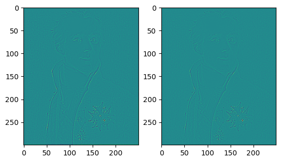
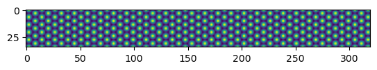
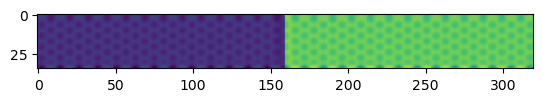
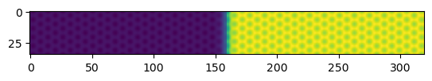
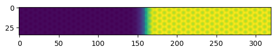
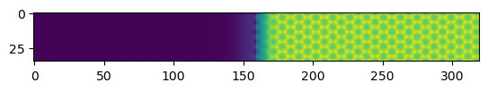
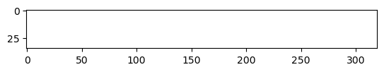
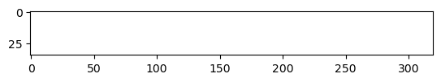

Kirkendall: A PFC application
In this application, Ref. 1 is reproduced.
Free Energy
The free energy functional of the Kirkendall model reads:
\begin{align} F = \int d\mathbf{x}\left[\frac{n}{2}\Lamba^0n - \frac{t}{3}n^3 + \right] \end{align}
Implementation
Laplacian Operator
In [1]’s dynamical Eqn. (3~4), there are Laplacian operations again and again, in order to simplify the code and to increase the accuracy of the Laplacian operator, the scipy.ndimage.laplace function in the scipy package is used.
The following code is used to compare our function in the PFC: Grain Boundary Evolution section, and in this section:
[19]:
from scipy import ndimage
import numpy as np
import matplotlib.pyplot as plt
def laplacian(phi, dx):
phi_ipj0 = np.roll(phi, 1, axis=0) # phi_ipj0=phi(i+1,j)
phi_imj0 = np.roll(phi, -1, axis=0) # phi_imj0=phi(i-1,j)
phi_i0jp = np.roll(phi, 1, axis=1)
phi_i0jm = np.roll(phi, -1, axis=1)
phi_ipjp = np.roll(phi, (1,1), axis=(0,1))
phi_ipjm = np.roll(phi, (1,-1), axis=(0,1))
phi_imjp = np.roll(phi, (-1,1), axis=(0,1))
phi_imjm = np.roll(phi, (-1,-1), axis=(0,1))
phi_lap = (0.5*(phi_ipj0+phi_imj0+phi_i0jp+phi_i0jm)+0.25*(phi_ipjp+phi_imjp+phi_ipjm+phi_imjm)-3*phi)/(dx**2.0)
return(phi_lap)
def lap(phi, dx):
v = ndimage.laplace(phi)/(dx**2)
return(v)
img = plt.imread('../images/Laplace-Pierre-Simon.jpg')
img_gray = img.mean(axis=2)
edge1 = laplacian(img_gray, 0.1)
edge2 = lap(img_gray, 0.1)
fig = plt.figure()
ax1 = fig.add_subplot(121) # left side
ax2 = fig.add_subplot(122) # right side
ax1.imshow(edge1)
ax2.imshow(edge2)
[19]:
<matplotlib.image.AxesImage at 0x1d54230bdf0>

the Kirkendall Dynamics
In Ref. [1]’s Eq. (3~4):
\begin{align} \frac{\partial n_A}{\partial t} &= M_A\nabla^2\left\{\Lambda^0n-tn^2+vn^3+\left[w+B_2^ln^2\right]\psi+u\psi^3-K\nabla^2\psi\right\} \\ \frac{\partial n_B}{\partial t} &= M_B\nabla^2\left\{\Lambda^0n-tn^2+vn^3-\left[w+B_2^ln^2\right]\psi-u\psi^3+K\nabla^2\psi\right\} \end{align}
since \(n=n_A+n_B\) and \(\psi=n_A-n_B\):
\begin{align} \frac{\partial n}{\partial t} &= (M_A+M_B)\nabla^2\left(\Lambda^0n-tn^2+vn^3\right) \nonumber \\ &+ (M_A-M_B)\left[\left(w+B_2^ln^2\right)\psi+u\psi^3-K\nabla^2\psi\right] \\ \frac{\partial \psi}{\partial t} &= (M_A-M_B)\nabla^2\left(\Lambda^0n-tn^2+vn^3\right) \nonumber \\ &+ (M_A+M_B)\left[\left(w+B_2^ln^2\right)\psi+u\psi^3-K\nabla^2\psi\right] \end{align}
And the parameters are
\begin{align} a & = a = 6.927 \nonumber \\ B_0^l &= B0l = 0.7 \nonumber \\ B_2^l &= B2l = -1.8 \nonumber \\ B_0^x &= B0x = 1.0 \nonumber \\ t &= t = 0.6 \nonumber \\ v &= v = 1.0 \nonumber \\ K &= K = 4.0 \nonumber \\ w &= w = 1.0 \nonumber \\ u &= u = 4.0 \nonumber \\ n_{liquid} &= nliq = -0.2517 \nonumber \\ n_{solid} &= nsld = -0.1503 \nonumber \\ \Delta x &= dx = a/7 \nonumber \end{align}
3.1. Single crystal: vacancy diffusion
We first reproduce the Sec. 3.1, “a single crystal that contains an initial concentration inhomogeneity in the absence of grain boundaries, surfaces or other natural sources or sinks of vacancies”. Here
\begin{align} L_x & = Lx = a \nonumber \\ L_y & = Ly = 161 a_y \nonumber \\ \psi & = psi = \begin{cases} 0.1\; for\; y=[-L_y/2,0] \nonumber \\ -0.1\; for\; y=[0, L_y/2] \nonumber \\ \end{cases} \nonumber \\ n & n = \bar{n} + C\left[cos(2q_yy)/2-cos(q_xx)cos(q_yy)\right] \nonumber \\ \bar{n} &= nbar = -0.1501 \nonumber \\ a_y &= ay = \sqrt{3}a \nonumber \\ q_x &= qx = \frac{2\pi}{a} \nonumber \\ q_y &= qy = \frac{q_x}{\sqrt{3}} \nonumber \\ M_A &= MA = 1.0 \nonumber \\ M_B &= MB = 0.1 \nonumber \end{align}
[40]:
from scipy import ndimage
import numpy as np
import matplotlib.pyplot as plt
def lapCalc(phi, dx):
lap = ndimage.laplace(phi)/(dx**2)
return(lap)
def lmdnCalc(B0l, B2l, B0x, dx, psi, n):
lapn = lapCalc(n, dx)
lap2n = lapCalc(lapn, dx)
ter1 = (B0l-B0x)*n
ter2 = B2l*psi**2
ter3 = B0x*(n+2*lapn+lap2n)
lmdn = ter1 + ter2 + ter3
return(lmdn)
def dynnCalc(B0l, B2l, B0x, t, v, w, u, K, MA, MB, dx, psi, n):
lmdn = lmdnCalc(B0l, B2l, B0x, dx, psi, n)
lappsi = lapCalc(psi, dx)
ter1 = (MA+MB)*lapCalc(lmdn-t*n**2+v*n**3, dx)
ter2 = (MA-MB)*((w+B2l*n**2)*psi + u*psi**3 - K * lappsi)
dynn = ter1 + ter2
return(dynn)
def dynpsiCalc(B0l, B2l, B0x, t, v, w, u, K, MA, MB, dx, psi, n):
lmdn = lmdnCalc(B0l, B2l, B0x, dx, psi, n)
lappsi = lapCalc(psi, dx)
ter1 = (MA-MB)*lapCalc(lmdn-t*n**2+v*n**3, dx)
ter2 = (MA+MB)*((w+B2l*n**2)*psi + u*psi**3 - K * lappsi)
dynpsi = ter1 + ter2
return(dynpsi)
# parameter list
a = 6.927
ay = np.sqrt(3)*a
nbar = -0.1501
B0l = 0.7
B2l = -1.8
B0x = 1.0
t = 0.6
v = 1.0
K = 4.0
w = 1.0
u = 4.0
dt = 0.0005
dx = a/7
Lx = 5*a
Ly = 161*ay
Nx = int(Lx/dx)
Ny = int(Ly/dx)
Ny_div2 = int(Ny/2)
qx = 2*np.pi / a
qy = qx / np.sqrt(3)
C = 0.05
MA = 1.0
MB = 0.1
tstep = 2000
tdump = 200
xlst = np.arange(Nx) * dx
ylst = np.arange(Ny) * dx
[xmat, ymat] = np.meshgrid(xlst, ylst,indexing='ij')
# Initialisation
psi = np.zeros((Nx, Ny))
psi[:,Ny_div2:] = 0.2
psi[:,:Ny_div2] = -0.2
# n = nbar + C*(np.cos(2*qy*ymat)/2 - np.cos(qx*xmat)*np.cos(qy*ymat))
n = nbar + C*np.cos(2*qy*ymat) - 2*C*np.cos(qx*xmat)*np.cos(qy*ymat)
# n = np.random.normal(nbar, 0.01, (Nx, Ny))
for t in range(tstep):
n += dt * dynnCalc(B0l, B2l, B0x, t, v, w, u, K, MA, MB, dx, psi, n)
psi += dt * dynpsiCalc(B0l, B2l, B0x, t, v, w, u, K, MA, MB, dx, psi, n)
if (t%tdump == 0):
plt.figure()
plt.imshow(n[:,Ny_div2-160:Ny_div2+160]) # 样品很长，只展示中间320个单位长度的信息
C:\Users\yanglin\AppData\Local\Temp\ipykernel_11544\383490052.py:11: RuntimeWarning: overflow encountered in square
ter2 = B2l*psi**2
C:\Users\yanglin\AppData\Local\Temp\ipykernel_11544\383490052.py:19: RuntimeWarning: overflow encountered in multiply
ter2 = (MA-MB)*((w+B2l*n**2)*psi + u*psi**3 - K * lappsi)
C:\Users\yanglin\AppData\Local\Temp\ipykernel_11544\383490052.py:19: RuntimeWarning: overflow encountered in power
ter2 = (MA-MB)*((w+B2l*n**2)*psi + u*psi**3 - K * lappsi)
C:\Users\yanglin\AppData\Local\Temp\ipykernel_11544\383490052.py:19: RuntimeWarning: invalid value encountered in add
ter2 = (MA-MB)*((w+B2l*n**2)*psi + u*psi**3 - K * lappsi)
C:\Users\yanglin\AppData\Local\Temp\ipykernel_11544\383490052.py:20: RuntimeWarning: invalid value encountered in add
dynn = ter1 + ter2
C:\Users\yanglin\AppData\Local\Temp\ipykernel_11544\383490052.py:12: RuntimeWarning: invalid value encountered in add
ter3 = B0x*(n+2*lapn+lap2n)
C:\Users\yanglin\AppData\Local\Temp\ipykernel_11544\383490052.py:25: RuntimeWarning: overflow encountered in square
ter1 = (MA-MB)*lapCalc(lmdn-t*n**2+v*n**3, dx)
C:\Users\yanglin\AppData\Local\Temp\ipykernel_11544\383490052.py:25: RuntimeWarning: overflow encountered in multiply
ter1 = (MA-MB)*lapCalc(lmdn-t*n**2+v*n**3, dx)
C:\Users\yanglin\AppData\Local\Temp\ipykernel_11544\383490052.py:25: RuntimeWarning: invalid value encountered in subtract
ter1 = (MA-MB)*lapCalc(lmdn-t*n**2+v*n**3, dx)
C:\Users\yanglin\AppData\Local\Temp\ipykernel_11544\383490052.py:25: RuntimeWarning: overflow encountered in power
ter1 = (MA-MB)*lapCalc(lmdn-t*n**2+v*n**3, dx)
C:\Users\yanglin\AppData\Local\Temp\ipykernel_11544\383490052.py:25: RuntimeWarning: invalid value encountered in add
ter1 = (MA-MB)*lapCalc(lmdn-t*n**2+v*n**3, dx)
C:\Users\yanglin\AppData\Local\Temp\ipykernel_11544\383490052.py:26: RuntimeWarning: overflow encountered in square
ter2 = (MA+MB)*((w+B2l*n**2)*psi + u*psi**3 - K * lappsi)
C:\Users\yanglin\AppData\Local\Temp\ipykernel_11544\383490052.py:26: RuntimeWarning: overflow encountered in multiply
ter2 = (MA+MB)*((w+B2l*n**2)*psi + u*psi**3 - K * lappsi)
C:\Users\yanglin\AppData\Local\Temp\ipykernel_11544\383490052.py:26: RuntimeWarning: overflow encountered in power
ter2 = (MA+MB)*((w+B2l*n**2)*psi + u*psi**3 - K * lappsi)
C:\Users\yanglin\AppData\Local\Temp\ipykernel_11544\383490052.py:26: RuntimeWarning: invalid value encountered in add
ter2 = (MA+MB)*((w+B2l*n**2)*psi + u*psi**3 - K * lappsi)
C:\Users\yanglin\AppData\Local\Temp\ipykernel_11544\383490052.py:11: RuntimeWarning: overflow encountered in multiply
ter2 = B2l*psi**2
C:\Users\yanglin\AppData\Local\Temp\ipykernel_11544\383490052.py:18: RuntimeWarning: overflow encountered in square
ter1 = (MA+MB)*lapCalc(lmdn-t*n**2+v*n**3, dx)
C:\Users\yanglin\AppData\Local\Temp\ipykernel_11544\383490052.py:18: RuntimeWarning: overflow encountered in multiply
ter1 = (MA+MB)*lapCalc(lmdn-t*n**2+v*n**3, dx)
C:\Users\yanglin\AppData\Local\Temp\ipykernel_11544\383490052.py:18: RuntimeWarning: overflow encountered in power
ter1 = (MA+MB)*lapCalc(lmdn-t*n**2+v*n**3, dx)
C:\Users\yanglin\AppData\Local\Temp\ipykernel_11544\383490052.py:18: RuntimeWarning: invalid value encountered in add
ter1 = (MA+MB)*lapCalc(lmdn-t*n**2+v*n**3, dx)
C:\Users\yanglin\AppData\Local\Temp\ipykernel_11544\383490052.py:19: RuntimeWarning: overflow encountered in square
ter2 = (MA-MB)*((w+B2l*n**2)*psi + u*psi**3 - K * lappsi)
C:\Users\yanglin\AppData\Local\Temp\ipykernel_11544\383490052.py:19: RuntimeWarning: invalid value encountered in subtract
ter2 = (MA-MB)*((w+B2l*n**2)*psi + u*psi**3 - K * lappsi)








